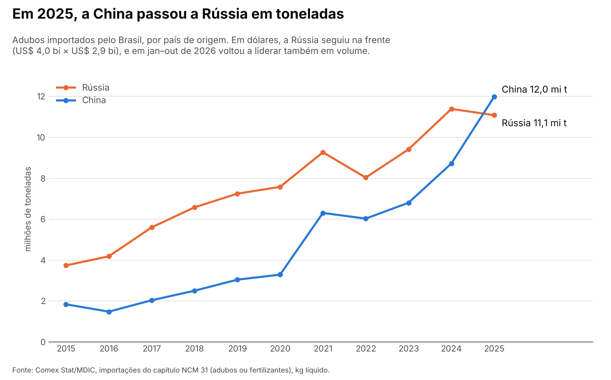

rotzOn #1: versão para o Substack
Gerado a partir de edicao-01/newsletter.md. Se mudar o texto, rode de novo rotzon/substack.py.
- No Substack: New post. Cole o título e o subtítulo nos campos próprios.
- No início do corpo, insira a imagem (botão de imagem → suba
visuais/china_vs_russia.png). Cole a legenda no campo de legenda e o texto alternativo em "Alt text". - Logo abaixo da imagem, cole o corpo. Intertítulos, negritos, citação e links vêm junto.
- Mande um e-mail de teste para você (Send test email) e confira no celular antes de agendar.
visuais/china_vs_russia.png
O que está acontecendo
Toda safra de soja, milho ou café começa com adubo, e quase todo ele chega de navio: em 2025, 99,3% das toneladas importadas entraram por via marítima. Segundo o Ministério da Agricultura, 85% do fertilizante consumido no Brasil é importado. Em 2025, o país comprou lá fora 45,5 milhões de toneladas de adubos, mais que o dobro (+130%) das 19,8 milhões de toneladas de 2015. A conta foi de US$ 15,5 bilhões FOB. FOB é o valor da mercadoria no porto de embarque, sem frete nem seguro.
Por anos, a Rússia foi a maior vendedora. Em 2025 a China passou na frente em peso: foram 12,0 milhões de toneladas chinesas contra 11,1 milhões russas. Isso dá 26,3% e 24,4% de tudo o que o Brasil importou, respectivamente. Em dez anos, o volume vindo da China ficou 6,5 vezes maior. O da Rússia, 3 vezes. Somados, os dois países responderam por metade das toneladas, e com o Canadá em terceiro (11,4%) os três maiores chegam a 62,1%.
Só que a virada tem asterisco. Em dólares, a Rússia continuou na frente: US$ 4,0 bilhões contra US$ 2,9 bilhões da China. O motivo está no tipo de adubo. Dois terços do que vem da China são nitrogenados, que dão nitrogênio (o "N" do NPK, a sigla dos três nutrientes principais: nitrogênio, fósforo e potássio). A Rússia manda principalmente potássicos (o "K") e misturas. Na média, a tonelada chinesa saiu a US$ 243 e a russa a US$ 361. E a liderança chinesa não se firmou: de janeiro a outubro de 2026, a Rússia voltou à frente também em toneladas (7,1 milhões contra 6,6 milhões).
E 2026 está mexendo no tabuleiro de novo. De janeiro a outubro, o Brasil importou 32,7 milhões de toneladas de adubo, 14,7% menos que no mesmo período de 2025. Dentro desse total, os líderes por nutriente mudaram. No potássio, o Canadá (38,2%) passou a Rússia (30,0%). No fósforo, o Marrocos (29,6%) passou o Egito (28,0%). E um nome pouco lembrado entrou no top 5 de fornecedores: o Turcomenistão, país da Ásia Central, com 6,2% das toneladas. Ou seja, o mapa de quem abastece o Brasil não é fixo e muda de um ano pro outro.
O que isso quer dizer pro Brasil
Cada nutriente tem seu "dono". No nitrogênio, a China sozinha vendeu 45,9% das toneladas em 2025. No potássio, Rússia (44,6%) e Canadá (37,2%) somaram mais de 80%. No fósforo, os líderes foram Egito e Marrocos. Ou seja, a lavoura brasileira fica exposta ao que acontece em poucos países: uma guerra, uma restrição de exportação, um porto parado. O ano de 2022 mostra o tamanho da oscilação. O Brasil importou 8% menos toneladas que em 2021 e gastou 63% a mais, US$ 24,7 bilhões, porque a tonelada média passou de US$ 365 para US$ 649. O governo tem um plano pra reduzir a dependência externa para 50% até 2050. Até lá, a safra brasileira continua começando num porto do outro lado do mundo.
📌 Dado pra guardar
Em 2025, quase 1 em cada 4 toneladas de adubo que o Brasil importou veio da China, e quase outra veio da Rússia.
Fontes
- Importações de adubos: Comex Stat, Ministério do Desenvolvimento, Indústria, Comércio e Serviços (MDIC), dados abertos. Importação, capítulo NCM 31 (adubos ou fertilizantes), por país de origem e SH4, em kg líquido e US$ FOB, de 2015 a out/2026 (carga de 06/11/2026). comexstat.mdic.gov.br · API: api-comexstat.mdic.gov.br
- 85% importado e produção nacional de 7,21 Mt (17%) em 2024: Ministério da Agricultura e Pecuária, apresentação "Cenário da produção nacional de fertilizantes no Brasil 2025–2030" (José Carlos Polidoro), Comissão de Minas e Energia da Câmara, 30/09/2025, slides 3 e 4. PDF
- Meta de 50% até 2050: Plano Nacional de Fertilizantes (Decreto 10.991/2022, alterado pelo Decreto 11.518/2023). gov.br/agricultura
Como foi feito: os dados foram baixados da API oficial do Comex Stat. O código está aberto e qualquer pessoa pode refazer tudo.